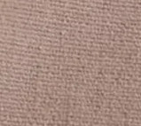
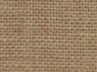
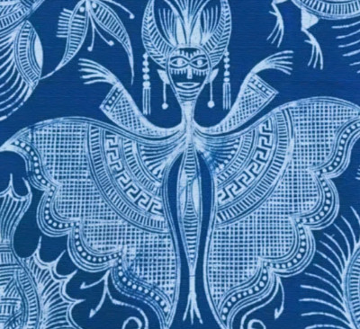
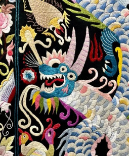
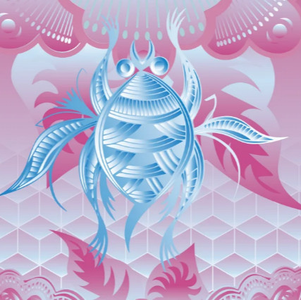
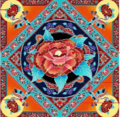

云体验苗绣
刺绣时长: 00:00
刺绣工具箱
选择面料

纯棉布

麻布
丝绸

帆布
选择丝线颜色
红色
绿色
蓝色
黄色
紫色
橙色
选择针法
平绣
平整细腻，适合大面积填充
辫绣
立体纹理，有编织感
打籽绣
颗粒感强，适合点缀
绉绣
波浪纹理，柔软有弹性
画笔粗细
细
中
粗
特粗
选择图案

蝴蝶妈妈纹

苗绣龙纹

蛙纹

缠枝莲纹
透明度: 50%
刺绣画布
当前步骤：1.选择图案 → 2.绘制轮廓 → 3.填充纹理
请先从左侧选择一个图案
选择后可在画布上点击/拖动绘制
刺绣小技巧
1. 纯棉布适合新手（纹理清晰，易上色）；2. 打籽绣适合点缀花蕊，平绣适合大面积填充；3. 绘制时尽量沿着图案轮廓，效果更美观！
未开始绘制